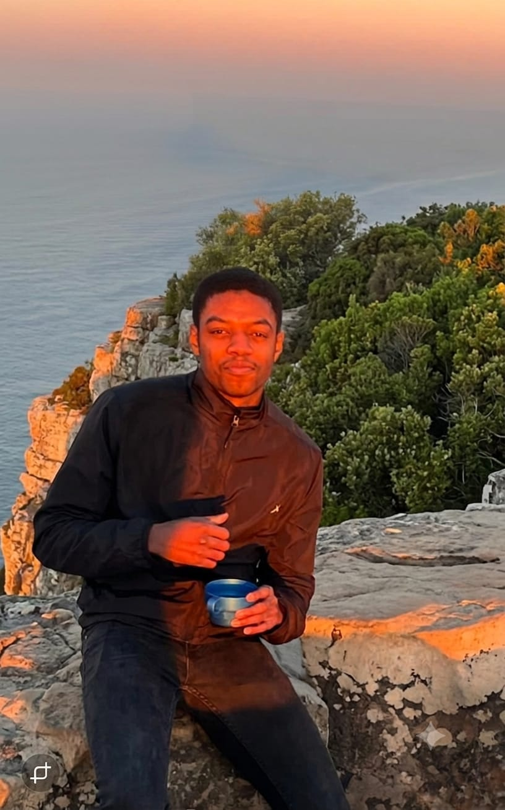
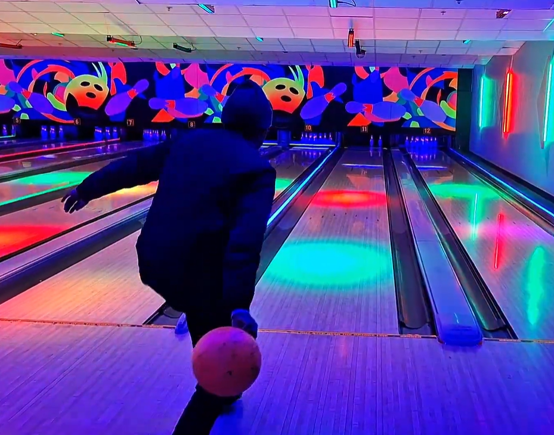
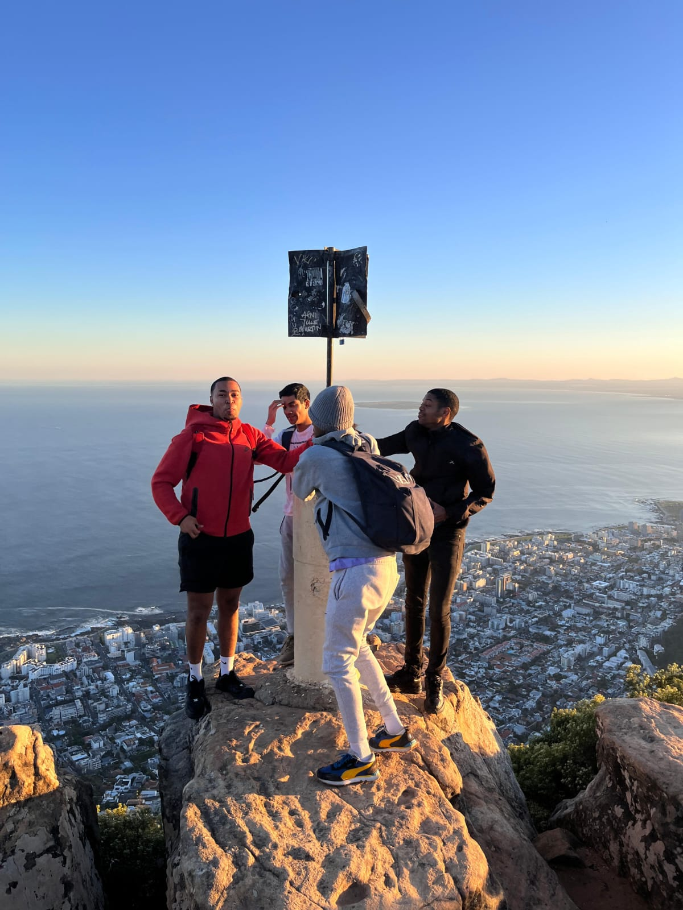
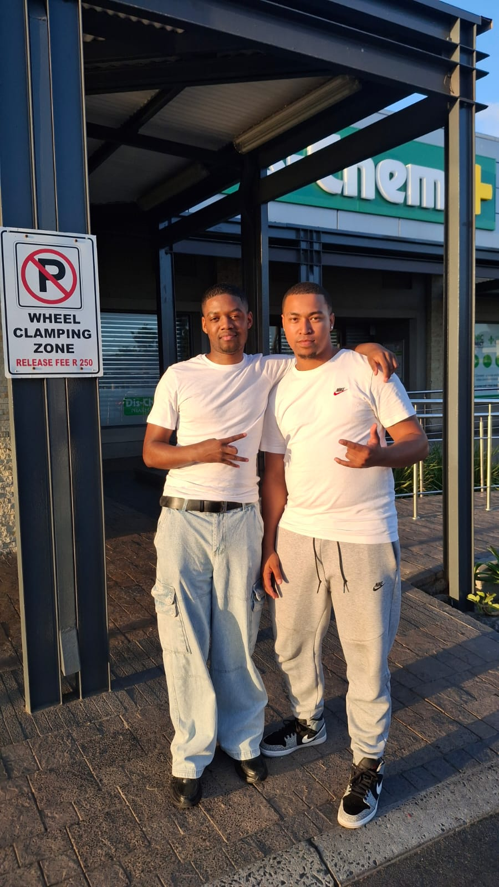

Hi, I'm Antonio.
I'm an IT student working toward a career as a Software and AI Engineer.
I have loved puzzles my whole life, playing go and chess from a young age. This love for abstract puzzles led me to discover and fall in love with programming, which has enabled me to tackle bigger and more fascinating problems.
To build good products in the fast paced startup environments of my first two summers, I have learned to wear many hats: PM, engineer, designer and more. As such, I acquired the tools that it takes to translate new technological breakthroughs to real features and products, from reaching out to HuggingFace devs directly to tinkering with fine tuning parameters, and clear communications across many teams.
I have always been a maker. As a long time ceramicist, I love turning a piece of clay into the physical expression of an idea or vision. Each piece takes shape through a process of pulling, compressing, trimming, and glazing small decisions that build on one another until the final form emerges. I bring that same iterative process to my work: shaping ideas through rapid experimentation, learning from each version, and refining them into products that are thoughtful and useful.
When I'm not working, I love exploring new and old food spots around the city. I'm a big Beli-er and pickleball player, and I try to make time for the gym, meal prep, and journaling. While I'm fascinated by many areas of philosophy, I'm especially drawn to consciousness and free will. On this note, I'm a substrate-independent physicalist and compatibilist.
As someone who didn't start coding before they could walk, I know how daunting it can be to start building experience and a network early in college. If you're looking for early-career advice, or just want to talk philosophy, feel free to send me a message on LinkedIn. I'll do my best to respond to everyone.



